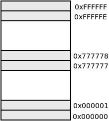
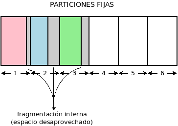
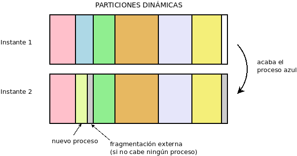
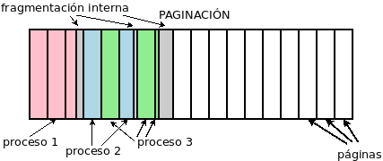

2.2.2. Gestión de memoria¶
Antes de estudiar cómo gestiona el sistema operativo la memoria, es preciso recordar dos aspectos ya señalados:
La ejecución de todo programa supone que tanto su código como los datos que manipula se copien en la memoria RAM.
La memoria está dividida en celdas cuyo contenido constituye una palabra, por lo general de un byte, cada una de las cuales se referencia mediante una dirección de memoria única. Al total de la memoria se lo denomina espacio físico de memoria. Por ejemplo, para una memoria RAM de 16 MiB, el espacio de memoria va desde la dirección
0x000000a la dirección0xFFFFFF:Nota
Obsérvese que si la última dirección de memoria es la
0xFFFFFF, existen \(2^4*2^4*2^4*2^4*2^4*2^4 = 2^{24}\) celdas de memoria. Como cada celda es de 1 byte, el tamaño de la memoria es de \(2^{24} = 2^4*2^{10}*2^{10}\) B o, lo que es lo mismo, 16 MB.A las direcciones que identifican a cada una de las celdas posibles del espacio físico de memoria se las denomina direcciones físicas de memoria.
El espacio físico de memoria está bastante limitado (la memoria RAM es cara), por lo que una labor muy importante del sistema operativo es gestionar cómo los procesos utilizarán esta memoria.
2.2.2.1. Ocupación de memoria¶
Al crear un proceso, sus necesidades de memoria son las siguientes:
Un PCB, cuyos metadatos requiere el sistema operativo para gestionarlo.
Un espacio virtual de memoria en el que se almacenan el código y los datos que manipula. El espacio virtual de memoria de un proceso es la parte del espacio físico de memoria que ocupa dicho proceso. Las celdas de este espacio virtual se referencian mediante direcciones virtuales de memoria relativas a su comienzo.
Estas direcciones virtuales son con las que trabaja internamente cada proceso.por lo que es necesario hacer una traducción entre ellas y las direcciones físicas. La encargada de ello es una parte del procesador llamada Unidad de manejo de memoria (MMU por sus siglas en inglés).
Por otra parte, el espacio virtual, a su vez, se compone de cuatro espacios:
Código, que es espacio reservado para las instrucciones del programa y que, obviamente, no varía a lo largo de la ejecución del proceso.
Datos, que se corresponden con los datos iniciales del programa y que, aunque puedan cambiar de valor, no cambian su tamaño.
Montículo, que contiene los datos que se crean dinámicamente durante la ejecución. Este espacio es dinámico y, por tanto, de tamaño variable durante la ejecución.
Pila, que contiene las llamadas anidadas a fragmentos distintos de código cada uno de los cuales tiene un contexto propio, esto es, un conjunto de datos distintos. Es necesario mantener la pila, porque un fragmento de código, sin haber terminado su ejecución, puede crear otro y pasar a ejecutar este. Como al terminar este segundo, se vuelve al primer fragmento, es necesario recordar por cuál instrucción iba la ejecución en el momento del salto y cuáles eran los datos que se manejaban entonces. Este espacio también es variable: comienza no ocupando memoria y crece y decrece durante la ejecución según haya más o menos contextos anidados.
Al comienzo del espacio virtual, esto es, en la dirección virtual 0x0, se
colocan el código y los datos, ambos espacios de tamaño fijo. El
monticulo, que al iniciar el programa no tendrá ningún tamaño empieza a crecer
a continuación y la pila, que también es variable, se coloca al final del
espacio y empieza a crecer hacia direcciones virtuales de memoria más bajas.
2.2.2.2. Técnicas¶
Existen distintas técnicas para asignar memoria a los procesos, dependiendo de si un espacio virtual debe ocupar direcciones contiguas de memoria física, o si los espacios virtuales pueden trocearse y cada trozo albergase en en posiciones no contiguas de memoria física:
Espacio virtual |
Técnica |
Fragmentación |
|---|---|---|
Indivisible |
Particiones fijas |
Interna |
Particiones dinámicas |
Externa |
|
Divisble |
Paginación |
Interna |
Segmentación |
Externa |
Ver también
Como complemento a las explicaciones vertidas aquí sobre las técnicas de gestión puede consultar este esclarecedor vídeo de Juan V. Carrilo sobre asignación de memoria.
2.2.2.2.1. Particiones¶
En esta solución la memoria se divide en bloques que ocupan direcciones contiguas de memoria física, a los que se denomina partición. Cada partición comienza en una dirección de memoria, que se denomina registro base y tiene un tamaño concreto que determina cuál es su registro límite. En esta técnica a cada proceso se le asigna una única partición y una partición sólo puede estar ocupada por un único proceso. El sistema operativo se encarga de mantener el registro de dónde comienza cada partición, cuánto tamaño tiene y qué proceso la está ocupando. Como todo proceso debe caber en un partición, esto obliga a que los espacios virtuales de memoria sean pequeños (como máximo el tamaño de la partición mayor).
El particionado puede ser de dos tipos:
- Fijo
La memoria se particiona de antemano, de manera que las particiones son fijas, aunque no todas tienen por qué tener el mismo tamaño. Su principal desventaja es que los espacios virtuales de los procesos no casan en tamaño exactamente con las particiones, por lo que la parte de la partición que no haya sido ocupada por el proceso al que se le ha asignado, no puede aprovecharse. Esta circunstancia se denomina fragmentación interna.
- Dinámico
Las particiones se van creando ajustándose al tamaño de cada proceso. En este caso, no existe fragmentación interna; pero, cuando un proceso acaba, se libera la partición que ocupa el proceso extinto con lo que resulta un espacio libre igual al tamaño de su espacio virtual de memoria. Este espacio puede ser ocupado parcialmente por otro nuevo proceso que requiere algo menos de memoria, lo que quizás suponga que el hueco aún libre sea tan pequeño que no pueda albergar nuevos procesos. En este caso se habla de fragmentación externa.

2.2.2.2.2. Paginación¶
En la técnica de las particiones cada proceso ocupa siempre direcciones de memoria contiguas. La paginación, en cambio, no exige eso. En ella, el sistema operativo divide el espacio de memoria física en bloques de tamaño fijo, a los que se denomina frames, y el espacio virtual de memoria de cada proceso en bloques llamados páginas que tienen el mismo tamaño que los frames. Tanto páginas como frames se numeran correlativamente.
La técnica consiste en asociar a cada página un frame distinto, pero sin la necesidad de que a las páginas de un proceso se le asignen frames contiguos. Para ello el sistema operativo crea para cada proceso una tabla de paginación que lleva el control de estas asignaciones. En el PCB deberá existir un puntero a la correspondiente tabla de paginación.
La técnica sigue produciendo fragmentación interna, pero en mucha menor medida que la técnica de particiones fijas, ya que las páginas son de manor tamaño que las particiones.
2.2.2.2.3. Segmentación¶
Esta técnica consiste en fragmentar el espacio virtual de memoria en bloques, llamados segmentos (que no tienen que tener igual tamaño) dentro de los cuales se almacena información que comparta algo en común. Estos segmentos se asignan a espacio en la memoria física que no tiene que ser contiguo, de manera que el sistema operativo irá buscando huecos libres para ubicarlos.
El sistema operativo debe crear para cada proceso una tabla con todos los segmentos de los que se compone indicando qué dirección física ocupa y cuál es su tamaño. Esta técnica, como la de particiones dinámicas presenta fragmentación externa, pero en mucha menor medida; puesto que los segmentos son más pequeños que las particiones dinámicas.
2.2.2.2.4. Memoria virtual¶
Esta técnica, que se compagina con la de paginación o segmentación, permite alojar en memoria RAM no todo el proceso, sino sólo las páginas o segmentos del fragmento de código y los datos que se estén ejecutando; el resto se guarda en memoria secundaria y se rescata de ella, cuando se necesite.
Ahora bien, como la memoria secundaria es muchísimo más lenta, la memoria virtual sólo se usa en caso de que sea estrictamente necesario, esto es, cuando el proceso que se quiere cargar en memoria necesita más espacio de la memoria disponible. También es posible que el sistema decida que de otro proceso ya cargado en memoria RAM todo o parte pase a memoria virtual. Al volver a la memoria principal, no tendrá por qué ocupar las mismas direcciones de memorias.
La zona de la memoria secundaria que se usa como memoria de intercambio no es caprichosa, es una zona especial reservada para tal fin que se llama memoria de intercambio, memoria swap o, simplemente, swap. En los sistemas Windows se usa un fichero definido para tal fin; en los sistemas linux, aunque es posible el uso del fichero, es común, la creación de una partición especial en el disco duro dedicada exclusivamente a este fin.
Nota
Hacer demasiado uso de la memoria de intercambio penaliza el rendimiento, y es señal de que debemos ir pensando en aumentar la memoria RAM del equipo.